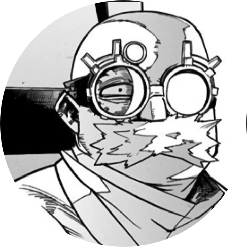

All Might
Eraser Head

Present Mic

Cementoss
Midnight
People are not born equal, a realization that four-year-old Izuku Midoriya faced when bullied by his classmates who had unique special powers. Izuku was one of the rare cases where he was born with absolutely no unique powers. This did not stop Izuku from pursuing his dream, a dream of becoming a great hero like the legendary All Might. To become the great hero he hopelessly wants to become, he will now join the ranks of one of the highest rated "Hero Academies" in the country: U.A. High School. With the help of his idol All Might, will he be able to claim the ranks and become a true hero?
The story of My Hero Academia is set in a world where currently most of the human population has gained the ability to develop superpowers called "Quirks" (個性, Kosei), which occur in children within the age of four: it is estimated that around 80% of the world population has a Quirk. There are infinite types of Quirks, and it is extremely unlikely to find two people who have the exact same power, unless they are closely related. These particular abilities have allowed the development of a new category of people: Heroes, who face the evil-voted individuals who use the Quirks for selfish and criminal purposes, commonly known as Villains. In addition, Heroes who choose to exercise heroism at work level are recognized as Pro Heroes. Unless the individual is registered as a Pro Hero, the voluntary use of his or her Quirk in public places is considered a crime, except in exceptional cases.
Quirk (個性 Kosei?, lit. "Individuality"), also known as a Meta Ability (異能 Inō?) by the Meta Liberation Army,[1] is a special, superhuman ability that a person can have.
Along with being unique to each user, Quirks are compartmentalized into multiple categories. Quirk users are also limited to one ability and are thus unable to achieve any other.
Quirks have been collected into three categories:
(発動, Hatsudō, lit. "Activation")-type Quirk is the most widely used, which gives the ability to produce and release substances or alter the materials within certain limits. As the name indicates, this type of Quirk needs conscious use and, at times, good concentration skills, especially for prolonged use;
(変形, Henkei)-type Quirk allows the user to temporarily transform his body or part of it in order to obtain physical enhancement or additional skills. With some exceptions, the alterations due to this type of Quirk affect only the users themselves;
(異形, Igyō)-type Qurik always keeps passively active amplifying or altering functions and abilities of an organism and, for this reason, induces in the wearer far greater bodily mutations than other types, which makes wearers of this type of Quirk easily recognizable. Managing control of these skills requires training and, however, the resulting mutations can cause problems or inconvenience for users.
Before the series was published in Weekly Shonen Jump, Kohei Horikoshi tested My Hero Academia ideas in a One-Shot that was published within Akamaru Jump in Winter 2008. On January 26, 2015, Viz Media announced that starting on February 9, 2015 of that year, they would officially translate the series into English for release in Viz Shonen Jump.
|
|
Nezu
|
Recovery Girl
| Lunch Rush(CHEF)
| Thirteen
|
Hound Dog |
|---|
|
All Might |
Eraser Head |
Present Mic |
Cementoss |
Midnight |

Izuki Midoriya |
Katsuki Bakugo |

Kyoka Jiro |

Denki Kaminari |
Tenya Lida |
|
Fumikage Tokoyami |
Momo Yaoyorozu |
Ochaco Uraraka |
Shoto Todoroki |
Eijiro Kirishima |

|
||||
|---|---|---|---|---|

Endeavor |

Hawks |

Best Jeanist |

Edgeshot |
Mirko |
|
|
||||
|---|---|---|---|---|

All for One |

Tomura Shigaraki |

Kurogiri |
Gigantomachia |

Kyudai Garaki |
The story has been noted to take inspiration from elements in superhero comics, such as the aesthetics of its characters , and due to the popularity of the series, characters of My Hero Academia were used to promote the Marvel Studios film Avengers: Infinity War. Before the anime adaptation's premiere, manga author Masashi Kishimoto praised Kōhei Horikoshi's work, believing it would be a success overseas; Horikoshi, meanwhile, has cited Kishimoto's Naruto series as a primary source of inspiration.
Volume 1 reached 7th place on the weekly Oricon manga chart with 71,575 copies sold. It sold out almost immediately on its first printing. Volume 2 reached 6th place, with 167,531 copies and, by January 18, 2015, had sold 205,179 copies.As of March 2017, there were over 10 million copies of My Hero Academia in circulation. As of August 2018, the manga had over 16 million copies in print.As of December 2018, the manga had over 20 million copies in print. As of December 2019, the manga had over 26 million copies in print. My Hero Academia was the 6th best selling manga in 2019. In 2019, My Hero Academia ranked 37th on the 19th "Book of the Year" list by Da Vinci magazine.